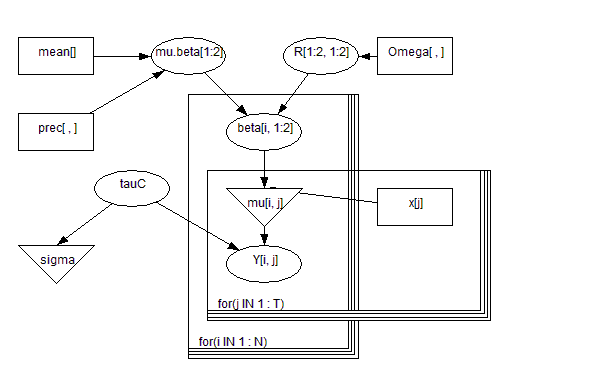
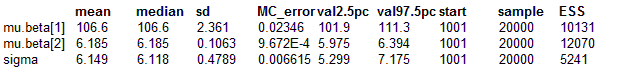

Birats: a bivariate normal hierarchical model
We return to the Rats example, and illustrate the use of a multivariate Normal (MVN) population distribution for the regression coefficients of the growth curve for each rat. This is the model adopted by Gelfand etal (1990) for these data, and assumes
a priori that the intercept and slope parameters for each rat are correlated. For example, positive correlation would imply that initially heavy rats (high intercept) tend to gain weight more rapidly (steeper slope) than lighter rats. The model is as follows
Y
ij ~ Normal(
μij,
τc)
μij =
β1i +
β2i x
j βi ~ MVN(
μβ,
Ω)
where Y
ij is the weight of the ith rat measured at age x
j, and
βi denotes the vector
(β1i,
β2i). We assume 'non-informative' independent univariate Normal priors for the separate components
μβ1 and
μβ2. A Wishart(R,
ρ) prior was specified for
Ω, the population precision matrix of the regression coefficients. To represent vague prior knowledge, we chose the the degrees of freedom
ρ for this distribution to be as small as possible (i.e. 2, the rank of
Ω). The scale matrix was specified as
This represents our prior guess at the order of magnitude of the
covariance matrix
Ω-1 for
βi (see Classic BUGS manual (version 0.5) section on Multivariate normal models), and is equivalent to the prior specification used by Gelfand et al. Finally, a non-informative Gamma(0.001, 0.001) prior was assumed for the measurement precision
τc.
 model
{
for( i in 1 : N ) {
beta[i , 1 : 2] ~ dmnorm(mu.beta[], R[ , ])
for( j in 1 : T ) {
Y[i, j] ~ dnorm(mu[i , j], tauC)
mu[i, j] <- beta[i, 1] + beta[i, 2] * x[j]
}
}
mu.beta[1 : 2] ~ dmnorm(mean[], prec[ , ])
R[1 : 2 , 1 : 2] ~ dwish(Omega[ , ], 2)
tauC ~ dgamma(0.001, 0.001)
sigma <- 1 / sqrt(tauC)
}
Data
list(x = c(8.0, 15.0, 22.0, 29.0, 36.0), N = 30, T = 5,
Omega = structure(.Data = c(200, 0, 0, 0.2), .Dim = c(2, 2)),
mean = c(0,0),
prec = structure(.Data = c(1.0E-6, 0, 0, 1.0E-6), .Dim = c(2, 2)),
Y = structure(
.Data = c(151, 199, 246, 283, 320,
145, 199, 249, 293, 354,
147, 214, 263, 312, 328,
155, 200, 237, 272, 297,
135, 188, 230, 280, 323,
159, 210, 252, 298, 331,
141, 189, 231, 275, 305,
159, 201, 248, 297, 338,
177, 236, 285, 350, 376,
134, 182, 220, 260, 296,
160, 208, 261, 313, 352,
143, 188, 220, 273, 314,
154, 200, 244, 289, 325,
171, 221, 270, 326, 358,
163, 216, 242, 281, 312,
160, 207, 248, 288, 324,
142, 187, 234, 280, 316,
156, 203, 243, 283, 317,
157, 212, 259, 307, 336,
152, 203, 246, 286, 321,
154, 205, 253, 298, 334,
139, 190, 225, 267, 302,
146, 191, 229, 272, 302,
157, 211, 250, 285, 323,
132, 185, 237, 286, 331,
160, 207, 257, 303, 345,
169, 216, 261, 295, 333,
157, 205, 248, 289, 316,
137, 180, 219, 258, 291,
153, 200, 244, 286, 324),
.Dim = c(30,5)))
Inits for chain 1
list(mu.beta = c(0,0), tauC = 1,
beta = structure(
.Data = c(100,6,100,6,100,6,100,6,100,6,
100,6,100,6,100,6,100,6,100,6,
100,6,100,6,100,6,100,6,100,6,
100,6,100,6,100,6,100,6,100,6,
100,6,100,6,100,6,100,6,100,6,
100,6,100,6,100,6,100,6,100,6),
.Dim = c(30, 2)),
R = structure(.Data = c(1,0,0,1), .Dim = c(2, 2)))
Inits for chain 2
list(mu.beta = c(10,10), tauC = 0.1,
beta = structure(
.Data = c(50,3,50,3,50,3,50,3,50,3,
50,3,50,3,50,3,50,3,50,3,
50,3,50,3,50,3,50,3,50,3,
50,3,50,3,50,3,50,3,50,3,
50,3,50,3,50,3,50,3,50,3,
50,3,50,3,50,3,50,3,50,3),
.Dim = c(30, 2)),
R = structure(.Data = c(3,0,0,3), .Dim = c(2, 2)))
Results
